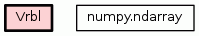

Class Vrbl
source code

Subclass of numpy ndarray that holds a 4D array for a variable.
The dimensions (time, level, lats, lons), similarly to WRF output.
The subclassing allows attachment of methods that compute derived fields
(e.g. vorticity) and inspection of metadata (dimension names etc.).
Example:
The standard `numpy` call::
arr = Dataset('wrfout.nc').variables['T'][0,0,:,:]
gives you a normal numpy array. To get a Vrbl() subclass, go via
a `datafiles` module, for instance::
arr = WRFOut('wrfout.nc').get('T',utc=0,lv=0)
This, when completed, will give a Vrbl array with attributes such as
dimensions.
Todo:
* All the things.
This is always called (by superclass).
1. If constructed explicitly, obj type is None
2. If constructed via casting (e.g., N.view), obj type is N.ndarray
3. If constructed via slicing, obj type is the class Vrbl.
In case #2, we return a superclass (subject to change...)
|